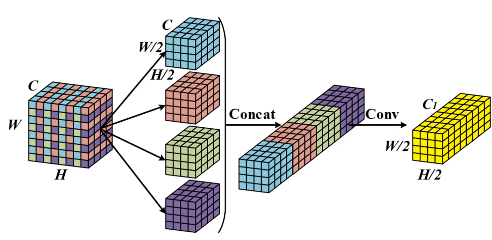
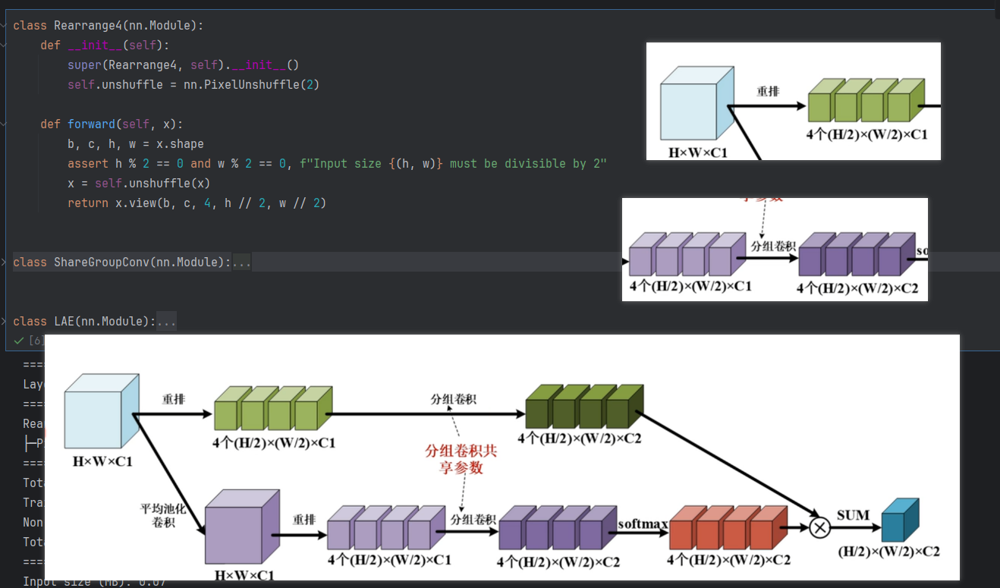
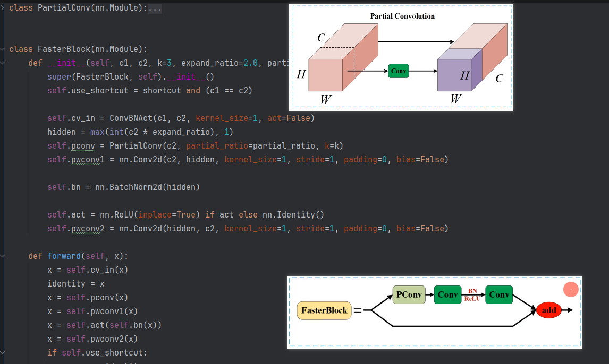
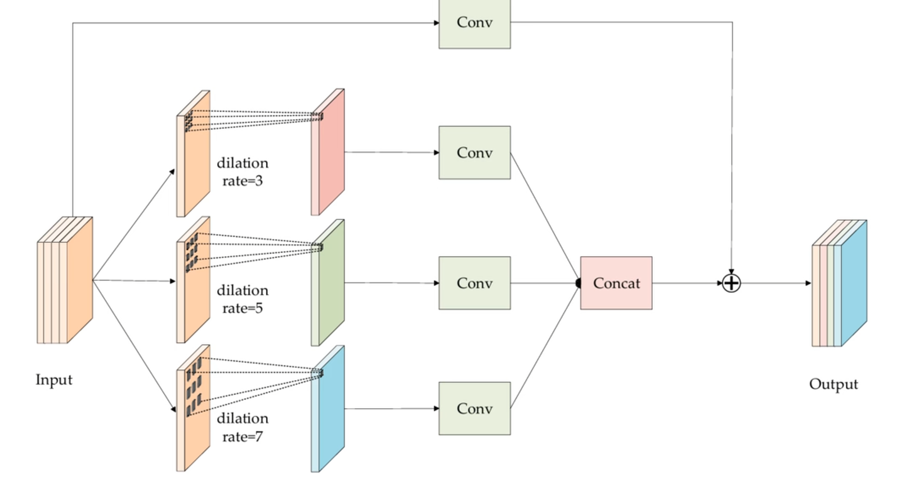
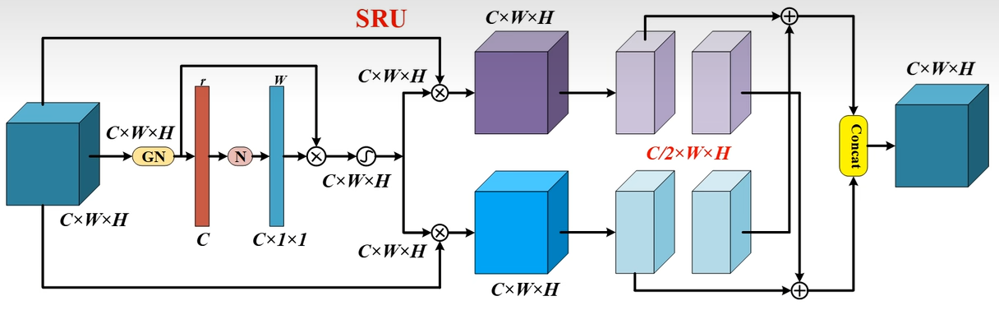
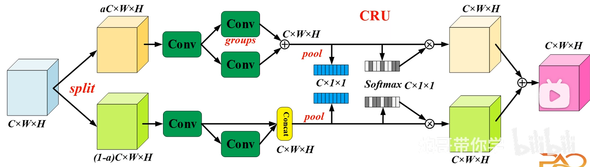

# 卷积与 SPP 变种模块
# SPD-Conv（空间到深度卷积）（2020）（下采样）
SPD-Conv 是一种旨在替代传统跨步卷积和池化层的新型构建模块。它特别针对低分辨率图像或小目标检测任务中容易丢失细节特征的问题而设计。
在传统的 CNN 架构中，为了减少计算量和扩大感受野，通常会使用步长为 2 的卷积或池化层。但这会导致一个致命缺陷：特征信息的丢失。

- PixelShuffle：将形状为
(N, C * r^2, H, W)的张量重排列为(N, C, H * r, W * r)。它把通道维度的信息 “搬运” 到空间维度上，实现上采样（增大分辨率，减少通道数）。 - PixelUnshuffle：将形状为
(N, C, H * r, W * r)的张量重排列为(N, C * r^2, H, W)。它把空间维度的信息 “打包” 进通道维度，实现下采样（减小分辨率，增加通道数）。
class SpaceToDepth(nn.Module): | |
def __init__(self, scales=2): | |
super(SpaceToDepth, self).__init__() | |
self.scales = scales | |
self.op = nn.PixelUnshuffle(scales) | |
def forward(self, x): | |
b, c, h, w = x.shape | |
assert h % self.scales == 0 and w % self.scales == 0, f"Input size {(h, w)} must be divisible by scales={self.scales}" | |
return self.op(x) | |
class ConvBNAct(nn.Module): | |
def __init__(self, in_channels, out_channels, kernel_size=1, stride=1, padding=None, groups=1, dilation=1, | |
act=True): | |
super(ConvBNAct, self).__init__() | |
self.conv = nn.Conv2d(in_channels, out_channels, kernel_size, stride, autoPad(kernel_size, padding, dilation), | |
groups=groups, dilation=dilation, bias=False) | |
self.bn = nn.BatchNorm2d(out_channels) | |
self.act = nn.SiLU(inplace=True) if act else nn.Identity() | |
def forward(self, x): | |
return self.act(self.bn(self.conv(x))) | |
class ConvSPP(nn.Module): | |
def __init__(self, c1, c2, scale=2, stride=1, k=3, act=True): | |
super(ConvSPP, self).__init__() | |
self.scale = scale | |
self.spd = SpaceToDepth(scale) | |
c_mid = c1 * (scale ** 2) | |
self.conv = ConvBNAct(c_mid, c2, k, stride, act=act) | |
def forward(self, x): | |
return self.conv(self.spd(x)) |
# LAE（轻量自适应提取模块）（2024）（下采样）

优点：轻量下采样、信息保留充分、自适应选择更强。
class Rearrange4(nn.Module): | |
def __init__(self): | |
super(Rearrange4, self).__init__() | |
self.unshuffle = nn.PixelUnshuffle(2) | |
def forward(self, x): | |
b, c, h, w = x.shape | |
assert h % 2 == 0 and w % 2 == 0, f"Input size {(h, w)} must be divisible by 2" | |
x = self.unshuffle(x) | |
return x.view(b, c, 4, h // 2, w // 2) | |
class ShareGroupConv(nn.Module): | |
def __init__(self, c1, c2, group_div=16, act=True): | |
super(ShareGroupConv, self).__init__() | |
in_ch = c1 * 4 | |
out_ch = c2 * 4 | |
base_g = max(1, c1 // group_div) | |
groups = math.gcd(in_ch, out_ch) | |
groups = min(groups, base_g) | |
groups = max(1, groups) | |
self.map = ConvBNAct(in_ch, out_ch, kernel_size=1, groups=groups, act=act) | |
self.c2 = c2 | |
def forward(self, x): | |
b, c, n, h, w = x.shape | |
x = x.view(b, c * n, h, w) | |
x = self.map(x) | |
x = x.view(b, self.c2, 4, h, w) | |
return x | |
class LAE(nn.Module): | |
def __init__(self, c1, c2, pool_k=3, group_div=3, act=True): | |
super(LAE, self).__init__() | |
self.rearrange_feat = Rearrange4() | |
self.avg_pool = nn.AvgPool2d(pool_k, stride=1, padding=pool_k // 2) | |
self.rearrange_weight = Rearrange4() | |
self.share_map = ShareGroupConv(c1, c2, group_div, act) | |
self.softmax = nn.Softmax(dim=2) | |
def forward(self, x): | |
feat_5d = self.rearrange_feat(x) | |
feat_5d = self.share_map(feat_5d) | |
weight_in = self.avg_pool(x) | |
weight_5d = self.rearrange_weight(weight_in) | |
weight_5d = self.share_map(weight_5d) | |
weight_5d = self.softmax(weight_5d) | |
out = (feat_5d * weight_5d).sum(dim=2) | |
return out |
# FasterBlock（部分卷积块）（2023）（平流）

class PartialConv(nn.Module): | |
def __init__(self, c, partial_ratio=0.25, k=3): | |
super(PartialConv, self).__init__() | |
assert 0 < partial_ratio < 1, "partial_ratio must be in (0, 1)" | |
self.c_conv = max(int(c * partial_ratio), 1) | |
self.c_skip = c - self.c_conv | |
self.conv = nn.Conv2d( | |
self.c_conv, self.c_conv, k, padding=autoPad(k), groups=self.c_conv, bias=False | |
) | |
def forward(self, x): | |
x_conv, x_skip = torch.split(x, [self.c_conv, self.c_skip], dim=1) | |
x_conv = self.conv(x_conv) | |
out = torch.cat([x_conv, x_skip], dim=1) | |
return out | |
class FasterBlock(nn.Module): | |
def __init__(self, c1, c2, k=3, expand_ratio=2.0, partial_ratio=0.25, shortcut=True, act=True): | |
super(FasterBlock, self).__init__() | |
self.use_shortcut = shortcut and (c1 == c2) | |
self.cv_in = ConvBNAct(c1, c2, kernel_size=1, act=False) | |
hidden = max(int(c2 * expand_ratio), 1) | |
self.pconv = PartialConv(c2, partial_ratio=partial_ratio, k=k) | |
self.pwconv1 = nn.Conv2d(c2, hidden, kernel_size=1, stride=1, padding=0, bias=False) | |
self.bn = nn.BatchNorm2d(hidden) | |
self.act = nn.ReLU(inplace=True) if act else nn.Identity() | |
self.pwconv2 = nn.Conv2d(hidden, c2, kernel_size=1, stride=1, padding=0, bias=False) | |
def forward(self, x): | |
x = self.cv_in(x) | |
identity = x | |
x = self.pconv(x) | |
x = self.pwconv1(x) | |
x = self.act(self.bn(x)) | |
x = self.pwconv2(x) | |
if self.use_shortcut: | |
x = x + identity | |
return x |
# RFEM（感受野增强模块）（2024）（平流）

class RFEMBranch(nn.Module): | |
def __init__(self, c1, c_, dilation=3): | |
super(RFEMBranch, self).__init__() | |
self.cv1 = ConvBNAct(c1, c_, kernel_size=1, stride=1) | |
self.cv2 = ConvBNAct(c_, c_, kernel_size=3, stride=1, dilation=dilation) | |
def forward(self, x): | |
x = self.cv2(self.cv1(x)) | |
return x | |
class RFEM(nn.Module): | |
def __init__(self, c1, c2, dilation_list=(3, 5, 7), e=0.5, shortcut=True, act=True): | |
super(RFEM, self).__init__() | |
assert len(dilation_list) >= 1, "dilation_list must be at least one" | |
self.use_shortcut = shortcut and (c1 == c2) | |
self.post_act = nn.SiLU(inplace=True) if act else nn.Identity() | |
self.cv_short = ConvBNAct(c1, c2, kernel_size=1, stride=1, act=False) | |
hidden_total = max(1, int(c2 * e)) | |
branch_num = len(dilation_list) | |
self.branch_c = math.ceil(hidden_total / branch_num) | |
self.branches = nn.ModuleList([ | |
RFEMBranch(c1, self.branch_c, dilation=dilation) | |
for dilation in dilation_list | |
]) | |
self.cv_fuse = ConvBNAct(branch_num * self.branch_c, c2, kernel_size=1, stride=1, act=False) | |
self.cv_identity = ConvBNAct(c1, c2, kernel_size=1, stride=1, act=False) \ | |
if (c1 != c2 and not self.use_shortcut) else nn.Identity() | |
def forward(self, x): | |
identity = self.cv_short(x) if self.use_shortcut else self.cv_identity(x) | |
ys = [branch(x) for branch in self.branches] | |
y = torch.cat(ys, dim=1) | |
y = self.cv_fuse(y) | |
y = self.post_act(y + identity) | |
return y |
# SCConv（空间与通道重构卷积）（2024）（平流）


**GroupNorm 组归一化存在的核心意义就一句话：** 在小 batch 场景下，替代 BatchNorm，让训练更稳定
def make_divisible_groups(channels, group_num): | |
groups = min(channels, group_num) | |
while groups > 1 and channels % groups != 0: | |
groups -= 1 | |
return max(groups, 1) | |
class SRU(nn.Module): | |
def __init__(self, c1, c2, group_num=4, gate_threshold=0.5): | |
super(SRU, self).__init__() | |
self.proj = ConvBNAct(c1, c2, kernel_size=1, stride=1, act=False) if c1 != c2 else nn.Identity() | |
gn_groups = make_divisible_groups(c2, group_num) | |
self.gn = nn.GroupNorm(num_groups=gn_groups, num_channels=c2, affine=True) | |
self.sigmoid = nn.Sigmoid() | |
self.gate_threshold = gate_threshold | |
assert c2 % 2 == 0 | |
def forward(self, x): | |
gn_x = self.proj(x) | |
gamma = self.gn.weight | |
w_gamma = gamma / (gamma.sum() + 1e-6) | |
w_gamma = w_gamma.view(1, -1, 1, 1) | |
reweights = self.sigmoid(gn_x * w_gamma) | |
info_mask = (reweights >= self.gate_threshold).float() | |
noinfo_mask = 1.0 - info_mask | |
x_info = x * info_mask | |
x_noinfo = x * noinfo_mask | |
x11, x12 = torch.chunk(x_info, 2, dim=1) | |
x21, x22 = torch.chunk(x_noinfo, 2, dim=1) | |
y1 = x11 + x22 | |
y2 = x12 + x21 | |
out = torch.cat([y1, y2], dim=1) | |
return x | |
class CRU(nn.Module): | |
def __init__(self, c1, c2, alpha=0.5, squeeze_ratio=2, group_size=2, group_kernel=3, act=True): | |
super(CRU, self).__init__() | |
assert 0 < alpha < 1, "alpha must be in (0, 1)" | |
self.proj = ConvBNAct(c1, c2, kernel_size=1, stride=1, act=False) if c1 != c2 else nn.Identity() | |
up_c = max(1, int(c2 * alpha)) | |
low_c = c2 - up_c | |
assert low_c >= 0, "alpha must be in (0, 1)" | |
up_s = max(1, up_c // squeeze_ratio) | |
low_s = max(1, low_c // squeeze_ratio) | |
self.up_c = up_c | |
self.low_c = low_c | |
self.squeeze_up = ConvBNAct(up_c, up_s, kernel_size=1, stride=1, act=act) | |
self.squeeze_low = ConvBNAct(low_c, low_s, kernel_size=1, stride=1, act=act) | |
gwc_groups = math.gcd(up_s, c2) | |
gwc_groups = math.gcd(gwc_groups, group_size) | |
gwc_groups = max(gwc_groups, 1) | |
self.gwc = ConvBNAct(up_s, c2, kernel_size=group_kernel, stride=1, groups=gwc_groups, act=act) | |
self.pwc_up = ConvBNAct(up_s, c2, kernel_size=1, stride=1, act=act) | |
self.pwc_low = ConvBNAct(low_s, c2 - low_s, kernel_size=1, stride=1, act=act) | |
self.pool = nn.AdaptiveAvgPool2d(1) | |
def forward(self, x): | |
x_up, x_low = torch.split(x, [self.up_c, self.low_c], dim=1) | |
x_up = self.squeeze_up(x_up) | |
x_low = self.squeeze_low(x_low) | |
y1 = self.gwc(x_up) + self.pwc_up(x_up) | |
y2 = torch.cat([self.pwc_low(x_low), x_low], dim=1) | |
s1 = self.pool(y1) | |
s2 = self.pool(y2) | |
beta = torch.stack([s1, s2], dim=1) | |
beta = torch.softmax(beta, dim=1) | |
beta1 = beta[:, 0] | |
beta2 = beta[:, 1] | |
out = beta1 * y1 + beta2 * y2 | |
return out | |
class SCConv(nn.Module): | |
def __init__(self, c1, c2, alpha=0.5, squeeze_ratio=2, group_size=2, group_num=4, gate_threshold=0.5, | |
group_kernel=3, act=True): | |
super(SCConv, self).__init__() | |
self.cru = CRU(c1, c2, alpha, squeeze_ratio, group_size, group_kernel, act) | |
self.sru = SRU(c2, c2, group_num, gate_threshold) | |
def forward(self, x): | |
x = self.sru(self.cru(x)) | |
return x |